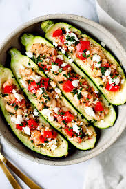

Mediterranean stuffed zucchini

Description
Zucchini boats baked and stuffed with lamb, feta, pine nuts, tomatoes, and other Mediterranean flavors!
Ingredients
- 1 extra large zucchini, halved lengthwise
- 1 tablespoon olive oil
- 1 sweet onion, chopped
- 1 tablespoon chopped garlic
- 1 pound ground lamb
Steps
- Preheat oven to 450 degrees F (230 degrees C).
- Use a melon baller to separate and remove seeds and pulp separately from the zucchini, carving out each half and leaving about a half-inch shell. Chop zucchini pulp into pieces about 1/4 inch in diameter. Discard seeds.
- Heat olive oil in a large skillet over medium heat. Cook and stir onion and garlic in hot oil until tender, about 5 minutes.
- Add ground lamb; continue to cook and stir until lamb is lightly browned, 5 to 7 minutes.
- Stir chopped zucchini into the lamb mixture. Reduce heat to medium-low. Simmer mixture until the zucchini is hot, about 3 minutes. Drain excess grease. Season lamb mixture with coarse salt and black pepper.